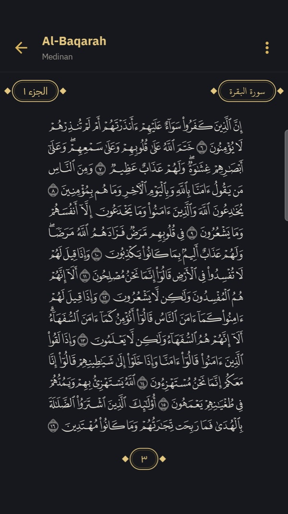
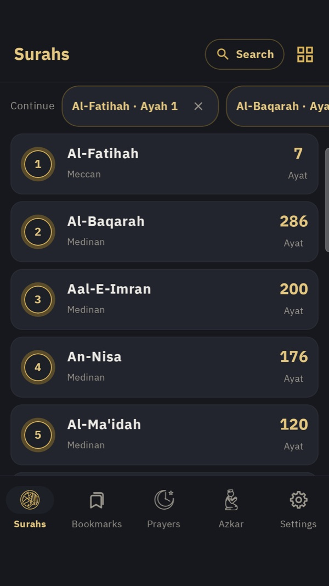
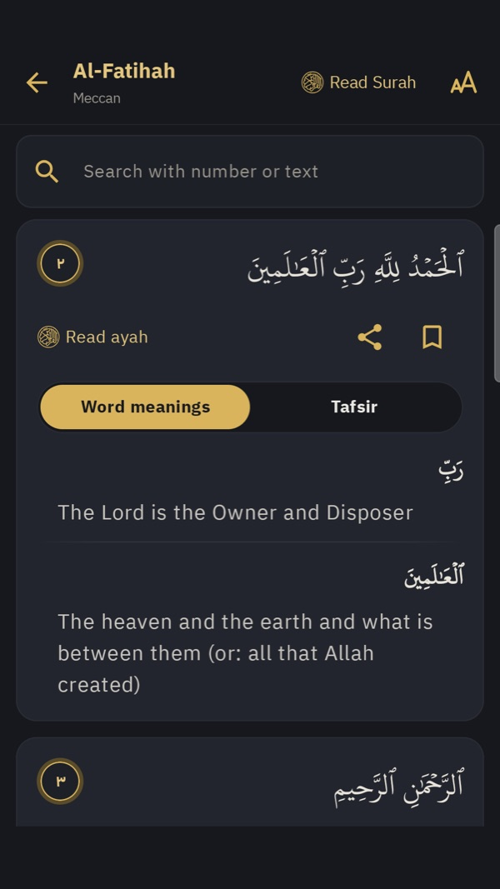
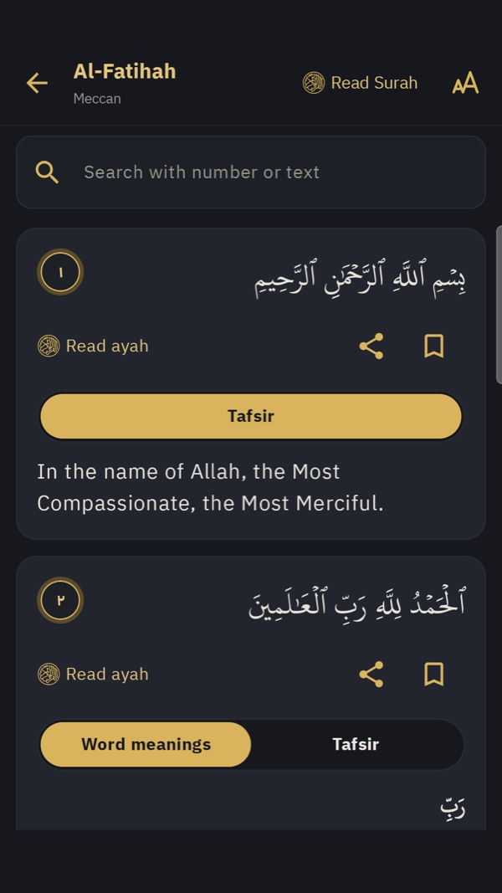
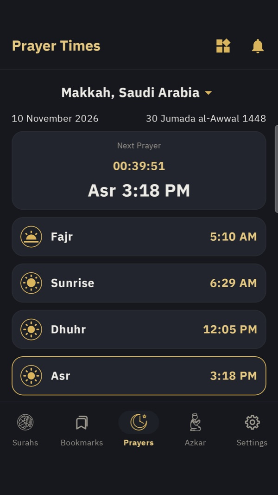
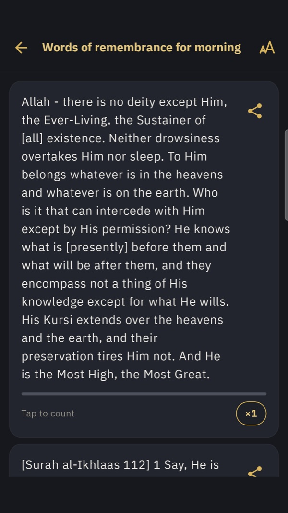
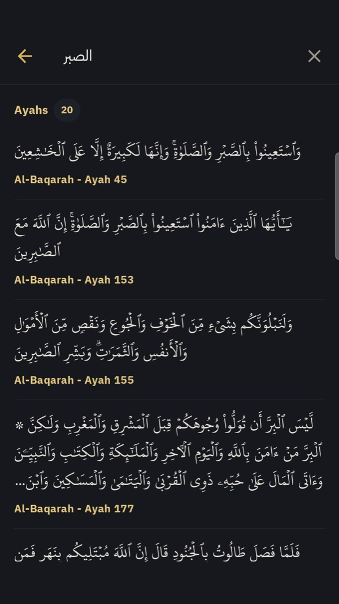
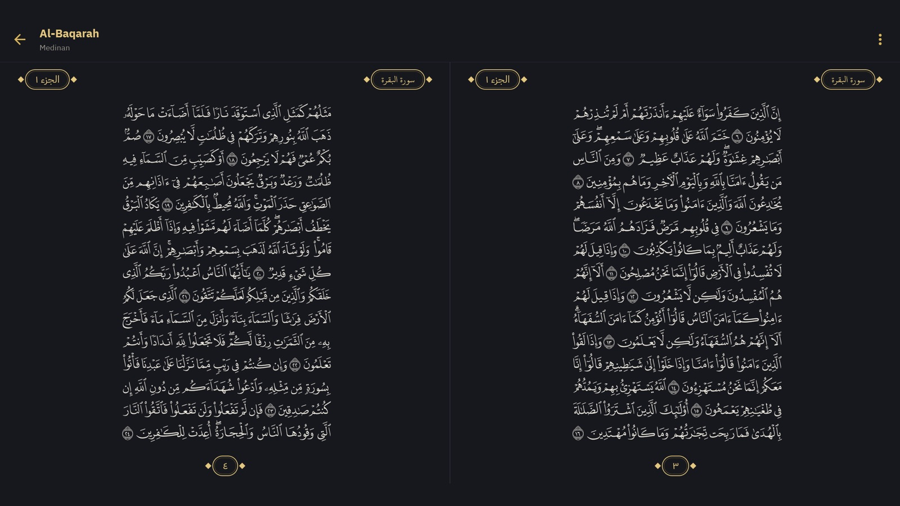
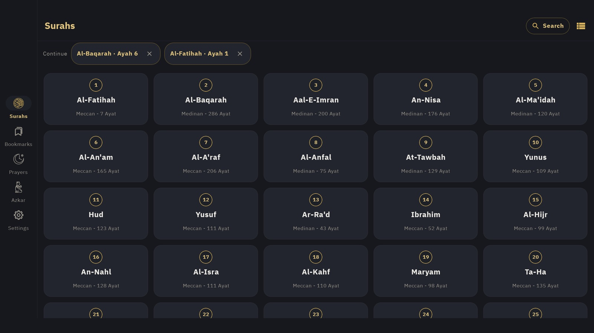

Read the Quran and understand every word
Uthmani-script reading, word-by-word meanings, simplified tafsir, prayer times, and azkar — all in one app.
Fully adaptive to every screen: phones, tablets and foldables, in portrait and landscape.
﴿الرَّحْمَٰنُ عَلَّمَ الْقُرْآنَ خَلَقَ الْإِنسَانَ عَلَّمَهُ الْبَيَانَ﴾

Everything you need to understand the Quran
Six core features designed to make reading and understanding easier and more beautiful.
Surah reading
The full Quran in Uthmani script with the Hafs font, continue-reading from where you left off, and adjustable text size.
Word meanings & tafsir
The meaning of every word, reviewed by a proofreader specialized in Qur'an and Arabic, plus Al-Tafsir Al-Muyassar from KFGQPC for each group of ayat.
Global search
Search the entire Quran for any ayah or word, with results highlighted inside the text.
Bookmarks
Save the ayat you want to come back to, organize them, and return with one tap.
Prayer times
Accurate times for your location with a next-prayer card. Your approximate location is sent only to fetch prayer times.
Azkar
Morning & evening, prayer, travel, and Hajj supplications — categorized and shareable as text or image.
Inside the app
A comfortable dark interface with gold accents — and a light theme if you prefer it.

Surah list

Word meanings

Simplified tafsir

Prayer times

Azkar

Search the Quran
Designed for every screen
The app is fully adaptive: on phones, tablets (Android and iPad) and foldables, in portrait and landscape, it rearranges itself to make use of every bit of space.


Side navigation rail
On wide screens the tabs move from the bottom of the screen to a rail at the side, leaving all the space for reading.
Two facing pages
On a tablet in landscape, mushaf pages appear side by side, just like a printed mushaf.
A grid that grows
The surah list adds columns as the screen widens: three on a phone, six on a tablet.
Comfortable in any orientation
Text and cards keep a comfortable reading width on large screens, in portrait and landscape, at any text size you choose.
About the app
A free app with no ads and no tracking, built to make understanding the Quran easier.
Resources:
- Quran text — KFGQPC (King Fahd Glorious Qur'an Printing Complex), Uthmani Hafs
- Quran font — KFGQPC HAFS Uthmanic Script
- Mushaf page layout and page fonts — KFGQPC QCF V4 via QUL (Tarteel)
- Tafsir — Al-Tafsir Al-Muyassar — KFGQPC
- English translation — Rwwad Translation Center, via quranenc.com
- Word meanings — Reviewed by a proofreader specialized in Qur'an and Arabic
- Azkar — Hisn Al-Muslim (hisnmuslim.com)
- Prayer times — AlAdhan API — your approximate location is sent only to fetch prayer times
- Adhan audio — “Call to prayer by Sabah Fakhry” — muezzin Sabah Fakhri, Wikimedia Commons (public domain)